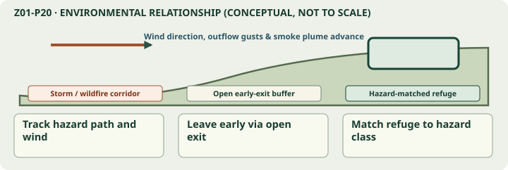

Z01-P20 · Survival fundamentals · New manuscript
Decide early when storm or wildfire threatens the route
Choose timely exit routes and hazard-specific refuge when severe storms or wildfire develop near camp or travel corridors.
When it applies · Outdoor travel or rural camp exposed to approaching severe thunderstorms, straight-line winds, tornado warnings or wildfire smoke and spread.
Equipment · Official alert receiver, map showing multiple road or trail exits, respiratory/eye protection if smoke is present and vehicle or go-bag.

Actions
- Monitor wind direction, smoke plumes, storm outflow gusts and official evacuation notices to keep at least two exit paths open away from the hazard.[T13, C18, E18]
- Evacuate early along open official routes when wildfire approaches or Red Flag winds threaten your corridor; do not wait for flames or roadblocks.[C19, T13]
- If a severe thunderstorm or tornado warning intercepts you, abandon tents and exposed timber immediately for the lowest interior room of a sturdy building or hard-topped vehicle for lightning.[E07, E17, E24]
Failure recognition · Waiting to pack nonessential camp gear while smoke thickens, wind topples trees or a single exit road closes behind the party.[C19, E16, T13]
Verify · Everyone knows the immediate departure trigger, which gear is left behind if ordered out and the designated safe rally destination.[T13, ED]
Stop or change course · Never drive or walk through active flames, downed power lines, flooded crossings or zero-visibility smoke; follow emergency responder directions immediately.[C19, T07, T01]
Evidence and editorial notes
- C18 · NWS Chicago · Definitions of a Fire Weather Watch and a Red Flag Warning (Current web edition)
- Section: Red Flag Warning and Fire Weather Watch Definitions · Conditions: Local fire weather outlook and land-manager order
Support: A Red Flag Warning means local conditions support extreme fire danger. Check local criteria and restrictions and adjust plans.
Limitations: A wind advisory alone is not a Red Flag Warning or an ignition permit. · Conflicting evidence: See A02 claim audit for boundaries.
Editorial note: Establishes Red Flag / high-wind conditions as automatic no-fire triggers. · Specialist reviewer: Wildland fire safety and meteorology
Primary source · checked 2026-11-25 - C19 · FEMA / Ready.gov · Wildfires (current web edition)
- Section: Wildfires > Stay Safe and Smoke Protection · Conditions: Approaching wildfire or heavy smoke in camp or community
Support: Evacuate early along open routes per official orders, protect airways from heavy smoke, and avoid turning back into active fire corridors.
Limitations: Cloth face coverings do not filter fine wildfire smoke particles; fitted particulate respirators or clean indoor air are distinct interventions. · Conflicting evidence: None; coordinates with NWS-WILDFIRE.
Editorial note: Covers wildfire escape and smoke decision thresholds in Z01/Z03. · Specialist reviewer: Emergency management and fire safety
Primary source · checked 2026-11-24 - E07 · NWS · Lightning Tips (current web edition)
- Section: If you hear thunder; when it is safe to return · Conditions: Thunderstorm and reachable substantial building or enclosed hard-topped vehicle
Support: Move to proper shelter at thunder. Wait 30 minutes after last thunder before resuming outdoor activity.
Limitations: Fabric tents, open pavilions, and trees are not lightning-safe shelters. · Conflicting evidence: None; 30-minute rule is standard NWS guidance.
Editorial note: Separates weather cover from lightning protection in Z02. · Specialist reviewer: Weather safety and emergency management
Primary source · checked 2026-11-24 - E16 · NWS · Wind Safety (current web edition)
- Section: Wind Safety > High Wind Hazards · Conditions: Forecast or developing high winds, squalls, or straight-line winds
Support: High winds topple trees, loft debris, and stress lightweight shelters beyond fabric and anchor limits; relocate out of timbered fall zones and into substantial shelter before gusts peak.
Limitations: Tents and tarps lack standardized wind-speed survival guarantees across soil types and pitch angles. · Conflicting evidence: None; avoids unvalidated mph ratings for improvised pitches.
Editorial note: Drives high-wind shelter inspection, guying limits, and abandonment thresholds. · Specialist reviewer: Weather safety and shelter equipment
Primary source · checked 2026-11-24 - E17 · National Weather Service · Tornado Safety: During a Tornado (Current web edition)
- Section: During a Tornado: home, outside, vehicle · Conditions: Tornado warning; sturdy shelter may be unavailable
Support: Prefer the suitable lowest interior area of a sturdy building. If unreachable, use NWS location-specific last-resort guidance and avoid overpasses and flood-prone low ground.
Limitations: The branch is contextual. Never portray a ditch, vehicle or makeshift shelter as reliably safe. · Conflicting evidence: See A02 claim audit for boundaries.
Editorial note: Establishes severe-storm abandonment threshold for camp shelters. · Specialist reviewer: Emergency management and meteorology
Primary source · checked 2026-11-25 - E18 · NWS · Thunderstorm Safety (current web edition)
- Section: Thunderstorm Safety > Hail, Downbursts, and Flooding · Conditions: Approaching severe thunderstorm with hail, outflow gusts, or heavy rain
Support: Outflow gusts, hail, lightning, and flash runoff can strike before rain arrives at camp; break exposed ridge travel early and secure or vacate lightweight shelters.
Limitations: Storm cells can intensify faster than backcountry foot travel can clear exposed terrain. · Conflicting evidence: None; integrates with E04 and E07.
Editorial note: Connects storm-structure warning cues to early shelter selection. · Specialist reviewer: Weather safety and emergency management
Primary source · checked 2026-11-24 - E24 · CDC · What to Do to Shelter in Place for a Chemical Emergency (2026-06-17)
- Section: What to Know; Shelter in Place; Next steps · Conditions: External airborne chemical release; officials advise sheltering
Support: Follow local instructions for shelter versus evacuation, stopping outside air intake, selecting a room, sealing if directed and awaiting all-clear.
Limitations: Tornado, flood, internal gas, fire and CO decisions require their own guidance. · Conflicting evidence: See A02 claim audit for boundaries.
Editorial note: Bridges Z02 shelter selection with emergency-management hazard classes. · Specialist reviewer: Emergency management and shelter safety
Primary source · checked 2026-11-25
Current assessment · A04-E24 (2026-11-25) · Bounded support newly confirmed (A04): Supports incident-specific instructions, shutoff/sealing and monitoring when directed. Separate from an indoor gas or CO hazard. Limits: Specialist review PENDING (Emergency management and shelter safety); publication HOLD. All release decisions pending. - T01 · American Red Cross · First Aid Steps (current web edition)
- Section: First Aid Steps > Check the scene; check the person · Conditions: Lay responder in United States; assess safety before contact
Support: Check scene safety, responsiveness, breathing and immediately life-threatening conditions.
Limitations: Lay guidance does not replace advanced clinical or rescue protocols. · Conflicting evidence: None; universal first-response opening gate.
Editorial note: Anchors scene-safety-first rule across Z01. · Specialist reviewer: EMS and wilderness medicine
Primary source · checked 2026-11-24 - T07 · FEMA · Flood Hazard Information Sheet (agency PDF)
- Section: How to stay safe when a flood threatens; take an active role · Conditions: U.S. household flood preparedness and evacuation
Support: Prepare contacts, medication and supplies. Heed evacuation instructions and avoid flooded roads.
Limitations: Six inches of moving water can knock down an adult; shallow-looking crossings hide road washouts. · Conflicting evidence: None; aligns with NWS-FLOOD.
Editorial note: Supports flood turnaround and evacuation decision thresholds. · Specialist reviewer: Emergency management
Primary source · checked 2026-11-24 - T13 · FEMA / Ready.gov · Evacuation (current web edition)
- Section: Evacuation > Before, During, and After Evacuation · Conditions: Developing wildfire, flood, storm, or infrastructure emergency
Support: Identify multiple exit routes ahead of time, keep essential go-bags and fuel ready, leave promptly when authorities order evacuation, and do not return until officials declare the area safe.
Limitations: Late departure can trap groups behind road closures, smoke, or rising water. · Conflicting evidence: None; pairs with NWS-FLOOD and READY-WILDFIRE.
Editorial note: Establishes clear leave-early decision thresholds for multi-hazard scenarios. · Specialist reviewer: Emergency management
Primary source · checked 2026-11-24
Source lineage · NWS wildfire, thunderstorm and Ready.gov evacuation; new manuscript · Classification · New manuscript.